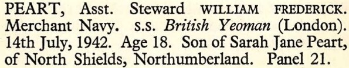

William Frederick Peart 1924 - 1942 [ Home ] | [ Calendar ] | [ Surnames Index ] | [ Family History ]The 2nd of 3 children of Sydney Peart (a locomotive engine driver) and Sara Biggs William Peart was born in North Shields, Tyne and Wear, England on 31 Mar 19241,2 . In 1942 he was serving in the military (regiment: Merchant Navy; Rank: Assistant Steward ).
He died on 14 Jul 19422,3,4 .
Parents Sydney Ralph was born on 6 Mar 1887Sara Jane was born on 29 Dec 1889Citations England & Wales births 1837-2006 - Findmypast World War 2 Allies Collection - Findmypast British Armed Forces And Overseas Deaths And Burials - Findmypast Commonwealth War Graves Commission Debt Of Honour - Findmypast Media Commonwealth War Graves Record  England & Wales births 1837-2006 - BMD/B/1924/2/AZ/001049/057 British armed forces and overseas deaths and burials - BMD/D/MARITIME/554706 Commonwealth War Graves Commission Debt Of Honour - GBM/CWGC/ROLLOFHONOUR/001537236 World War 2 Allies Collection - WW2/07062279 Family Tree Map
Generated by ged2site . Last updated on Feb 19, 2025